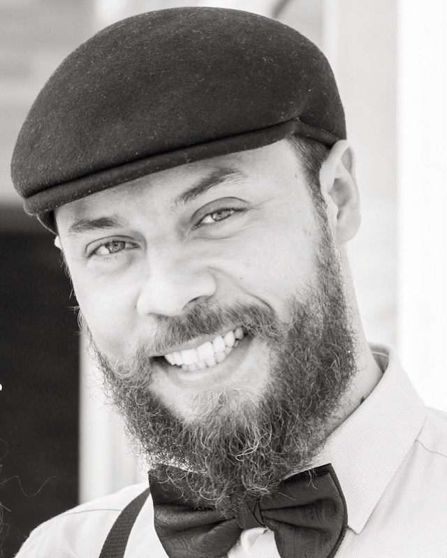

Semioticista, Escritor & Professor
Pesquiso, escrevo e ensino sobre as relações entre cognição, natureza, corpo, existência e sentido. Co-fundador do Instituto Mestra Natureza.

"Sou Ronan S. Cardoso - uma inquieta alma sensível com o olhar voltado para o sentido da existência."
Pesquiso, escrevo e ensino sobre as relações entre cognição, natureza, corpo, existência e sentido. Conduzo práticas de banhos florestais e trilhas interpretativas com foco nos processos biossemióticos dos sistemas vivos.
Minha missão é ampliar a compreensão de existência como comunicação, um processo semiótico onde o cosmos narra a si, e sobre como a vida incorpora aprendizado convertendo mundo em identidade, conhecimento em corpo.
Filosofia, poesia e a dinâmica entre mente, sentido e universo.
Uma reflexão rápida, mas de alto impacto, ideal para quebrar o automatismo do cotidiano. Trata-se de um convite para exercitar a qualidade do olhar, impulsionando o devir.
Ver na AmazonPara quem está cansado dos versos prontos, das metáforas complacentes, das paisagens decorativas, este livro propõe uma escavação. Um retorno irreversível ao selvagem íntimo.
Ver na AmazonO Instituto Mestra Natureza une ciência, poesia e amor pela natureza.
Reduz os níveis de cortisol, acalma os pensamentos acelerados e nos desperta para a percepção de que somos Natureza.
Conhecer a formação →Capacitação para atuar na Ecopsicologia em contextos terapêuticos, ecoeducativos, sociais ou culturais, com consciência ecológica e escuta sensível.
Conhecer a formação →Desvende a ciência por trás de cada aroma e seus efeitos terapêuticos. A química nunca foi tão poética e acessível.
Conhecer o curso →